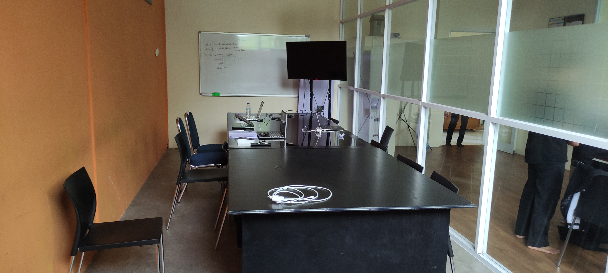
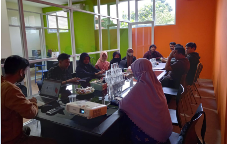
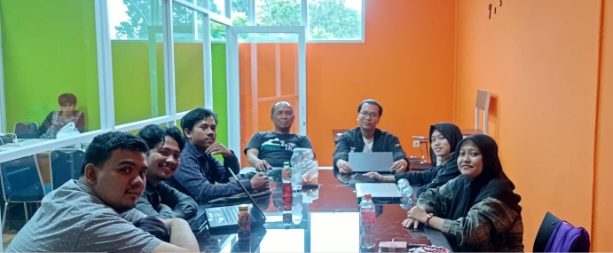
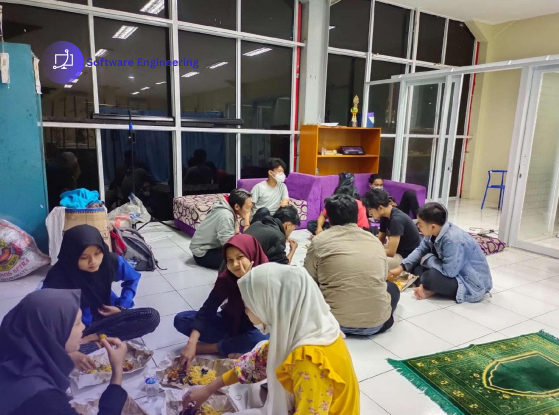

Membangun sistem cerdas yang dapat belajar, bernalar, dan mengambil keputusan layaknya manusia—dari Machine Learning hingga Natural Language Processing.

Apa itu KERIS?
Knowledge Engineering & Reliable Intelligent Systems (KERIS) adalah peminatan yang berfokus pada pengembangan sistem cerdas berbasis data. Di sini, kamu akan belajar bagaimana mesin dapat belajar dari data, memahami bahasa manusia, dan membuat keputusan yang dapat diandalkan.
Mulai dari rekomendasi film di Netflix, deteksi wajah di ponsel, hingga chatbot yang menjawab pertanyaan—semua itu adalah hasil dari ilmu yang dipelajari di peminatan KERIS.
Algoritma yang belajar dari data untuk prediksi.
Mengolah data menjadi insight dan keputusan.
Materi Utama
Mempelajari algoritma supervised/unsupervised learning, deep learning, hingga membangun model AI yang siap dipakai di industri.
Mengolah data dalam jumlah besar, analisis statistik, visualisasi data, serta membangun sistem rekomendasi berbasis data.
Membuat mesin memahami bahasa manusia (chatbot, sentimen analisis) dan mengenali objek pada gambar (deteksi wajah, OCR).
Struktur Organisasi
Para ahli yang siap membimbing dan berbagi pengalaman industri nyata.
Profil Lulusan
Lulusan KERIS sangat dicari oleh perusahaan teknologi, startup AI, hingga lembaga riset untuk membangun sistem cerdas berbasis data.
Membangun dan melatih model machine learning untuk produk berbasis AI.
Mengolah data menjadi insight bisnis dan model prediktif yang akurat.
Mengembangkan chatbot, sistem terjemahan, dan analisis teks otomatis.
Membuat sistem yang dapat "melihat" dan mengenali objek pada gambar/video.
Profil Lab
Sekilas gambaran tentang Laboratorium Knowledge Engineering (RISE KERIS).



Presentasi resmi RISE KERIS — Software Engineering UIKA
Ayo Bergabung
Mulai perjalananmu di peminatan Knowledge Engineering & Reliable Intelligent Systems dan raih karier gemilang di industri AI global.